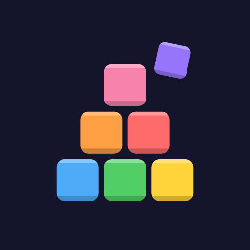

Englishسياسة الخصوصية للعبة Blokari
تاريخ السريان: 15 نوفمبر 2026
توضح هذه السياسة ما يحدث للمعلومات عندما تلعب Blokari (الحزمة com.amacraft.blokari)، وهي لعبة ألغاز لأجهزة Android من تطوير amacraft ("نحن").
باختصار
- تقدمك في اللعبة وإعداداتك محفوظة على جهازك فقط. ليس لدينا خادم ولا نظام حسابات، ولا تُرسل إلينا جولتك المحفوظة.
- تعرض اللعبة إعلانات من Google AdMob. تجمع Google بعض بيانات الجهاز لعرض الإعلانات وقياسها، كما هو موضح أدناه. وفي المنطقة الاقتصادية الأوروبية والمملكة المتحدة وسويسرا تُطلب موافقتك أولًا.
- تستخدم اللعبة Google Firebase لـتقارير الأعطال وتحليلات الاستخدام (مثل طريقة اللعب ونتيجة الجولة المنتهية). ترتبط هذه البيانات بمعرّفات عشوائية لنسخة اللعبة المثبتة لديك، ولا ترتبط باسمك أبدًا. وفي المنطقة الاقتصادية الأوروبية والمملكة المتحدة وسويسرا تتبع التحليلات اختيارك في نموذج الموافقة.
- التذكيرات إشعارات محلية تُجدول على هاتفك، ولا يُرسل إلينا أي شيء.
- لا تتم المشاركة إلا عندما تضغط "مشاركة" بنفسك، ومن خلال قائمة المشاركة الخاصة بهاتفك.
1. المعلومات المحفوظة على جهازك
تحفظ اللعبة ما يلي في مساحتها الخاصة على هاتفك لتكمل من حيث توقفت:
- النقاط وأفضل النتائج والجولة المحفوظة والمراحل والنجوم والألغاز المحلولة والإنجازات والملصقات؛
- العملات والمساعدات والثيمات المفتوحة والمهام والهدايا اليومية والسلاسل وتقدم الموسم؛
- آخر تحديات الأصدقاء التي أرسلتها أو فتحتها (الرقم الذي يحدد ترتيب القطع، والنقاط، والتاريخ)؛
- إعداداتك: اللغة، والوضع الفاتح أو الداكن، والصوت، وعلامات الألوان، ووضع اليد اليسرى، وتفضيلات التذكير.
هذه المعلومات المحفوظة لا تُرسل إلينا. فقط بعض أرقام اللعب الموضحة في القسم 3 (مثل نتيجة الجولة المنتهية) تُرسل إلى Google Analytics كأحداث منفصلة. يمكنك حذف المعلومات المحفوظة كلها بمسح بيانات التطبيق من إعدادات Android أو بإلغاء تثبيت اللعبة. وإذا كان النسخ الاحتياطي في Android مفعّلًا لحساب Google الخاص بك، فقد يضم Android هذه البيانات إلى النسخة الاحتياطية لجهازك. هذه النسخة تديرها Google تحت حسابك، ولا يمكننا الوصول إليها.
2. الإعلانات (Google AdMob)
Blokari مجانية، وتموّلها الإعلانات: إعلانات شريطية، وإعلانات بملء الشاشة بين الجولات، وإعلانات مكافأة اختيارية تشاهدها بإرادتك مقابل عملات أو عناصر داخل اللعبة. تقدم هذه الإعلانات خدمة Google AdMob التابعة لشركة Google LLC (وGoogle Ireland Limited في المنطقة الاقتصادية الأوروبية والمملكة المتحدة).
لعرض الإعلانات وقياسها ومنع الاحتيال، تجمع حزمة Google Mobile Ads داخل اللعبة وترسل إلى Google:
- المعرّف الإعلاني لجهازك ومعرّف مجموعة التطبيقات (app set ID)؛
- عنوان IP، ويمكن استخدامه لتقدير موقعك العام (المدينة أو المنطقة، وليس موقعك الدقيق)؛
- معلومات الجهاز والتطبيق مثل طراز الجهاز ونظام التشغيل واللغة وإصدار التطبيق؛
- التفاعل مع الإعلانات مثل الإعلانات المعروضة والضغطات ومشاهدات الفيديو؛
- معلومات تشخيصية عن أداء التطبيق وحزمة الإعلانات.
نحن لا نرى هذه البيانات بشكل يحدد هويتك، وكل ما يصلنا من AdMob تقارير مجمّعة (مثل عدد الإعلانات المعروضة). تستخدم Google هذه البيانات وفق سياساتها:
- كيف تستخدم Google المعلومات من التطبيقات التي تستخدم خدماتها: https://policies.google.com/technologies/partner-sites
- سياسة خصوصية Google: https://policies.google.com/privacy
- الإعلانات لدى Google وخياراتك: https://policies.google.com/technologies/ads
الموافقة في المنطقة الاقتصادية الأوروبية والمملكة المتحدة وسويسرا. إذا كنت في إحدى هذه المناطق، تعرض اللعبة نموذج الموافقة الخاص بـ Google (منصة User Messaging Platform) قبل تخصيص الإعلانات. يمكنك قبول الإعلانات المخصصة أو رفضها. إذا رفضت فقد تظهر لك إعلانات غير مخصصة، وهي ما زالت تستخدم جزءًا من البيانات السابقة لأغراض محدودة مثل ضبط عدد مرات الظهور ومنع الاحتيال والقياس. ويمكنك تغيير اختيارك في أي وقت من إعدادات اللعبة (خيارات الخصوصية).
التحكم من إعدادات Android. يمكنك إعادة تعيين المعرّف الإعلاني أو حذفه، أو إيقاف تخصيص الإعلانات، من إعدادات هاتفك (غالبًا: الإعدادات > Google > الإعلانات، أو الإعدادات > الخصوصية > الإعلانات).
3. التحليلات وتقارير الأعطال (Google Firebase)
لنفهم كيف تُلعب اللعبة ولنصلح الأعطال، تستخدم اللعبة خدمتين من Google Firebase: Google Analytics for Firebase وFirebase Crashlytics. تقدم خدمة Firebase شركة Google LLC (وGoogle Ireland Limited في المنطقة الاقتصادية الأوروبية والمملكة المتحدة)، وتعالج هذه البيانات لصالحنا بصفتها مزود خدمة.
التحليلات. لا ترسل اللعبة إلا حدثين خاصين بها:
- عند انتهاء الجولة: طريقة اللعب، والنتيجة، وعدد الخطوط التي أزلتها، وهل فزت، وهل أكملت الجولة بعد انتهائها؛
- عند استخدام مساعدة: طريقة اللعب واسم المساعدة.
ويجمع Google Analytics أيضًا بعض المعلومات تلقائيًا: معرّف نسخة التطبيق (معرّف عشوائي لنسخة اللعبة المثبتة لديك)، والمعرّف الإعلاني لجهازك إذا أتاحه Android، وأول مرة يُفتح فيها التطبيق، والجلسات، والشاشات المعروضة والوقت الذي تقضيه في التطبيق، وتحديثات التطبيق، وطراز الجهاز ونظام التشغيل واللغة وإصدار التطبيق، وبلدك أو منطقتك العامة المقدّرة من عنوان IP (وليس موقعك الدقيق). لا نرى هذه البيانات إلا في تقارير Google Analytics، ونستخدمها لنعرف أي الطرق والميزات تُلعب أكثر، حتى نحسّن اللعبة.
تقارير الأعطال. إذا تعطلت اللعبة أو واجهت خطأً غير متوقع، يرسل Firebase Crashlytics تقرير عطل إلى Google يتضمن: التفاصيل التقنية للخطأ (تتبّع الخطأ أو stack trace)، وطراز الجهاز، وإصدار نظام التشغيل، وإصدار التطبيق، ووقت العطل، ومعرّف تثبيت Crashlytics (معرّف عشوائي لنسخة اللعبة المثبتة لديك). نستخدم تقارير الأعطال فقط لاكتشاف المشكلات وإصلاحها.
لا تتلقى أيٌّ من الخدمتين اسمك أو بريدك الإلكتروني أو موقعك الدقيق أو أي شيء تكتبه أو تشاركه.
الموافقة في المنطقة الاقتصادية الأوروبية والمملكة المتحدة وسويسرا. نموذج موافقة Google الموضح في القسم 2 يضبط أيضًا وضع الموافقة (consent mode) الخاص بالتحليلات، فيتبع اختيارك ما إذا كان يُسمح لـ Analytics بحفظ معرّفاته واستخدامها. إذا رفضت فلن يحفظها Analytics أو يستخدمها، ولن تتلقى Google إلا معلومات محدودة بدون هذه المعرّفات. ويمكنك تغيير اختيارك في أي وقت من إعدادات اللعبة (خيارات الخصوصية). أما خارج هذه المناطق فالتحليلات مفعّلة افتراضيًا.
التحكم. يمكنك إعادة تعيين معرّف نسخة التطبيق ومعرّف تثبيت Crashlytics في أي وقت بمسح بيانات اللعبة من إعدادات Android (وهذا يحذف تقدمك المحفوظ أيضًا، انظر القسم 1) أو بإلغاء تثبيت اللعبة. ويمكنك أيضًا إعادة تعيين المعرّف الإعلاني من إعدادات Android كما في القسم 2.
مدة الاحتفاظ. تُحفظ بيانات التحليلات وفق إعداد الاحتفاظ بالبيانات في Google Analytics، وقد ضبطناه على شهرين؛ بعدها تُحذف البيانات المرتبطة بمعرّف نسخة التطبيق ولا يبقى إلا التقارير المجمّعة. ويحتفظ Firebase بتقارير الأعطال ومعرّفات التثبيت المرتبطة بها لمدة 90 يومًا.
- الخصوصية والأمان في Firebase: https://firebase.google.com/support/privacy
- سياسة خصوصية Google: https://policies.google.com/privacy
4. الإشعارات
إذا سمحت بذلك، يمكن للعبة أن تذكّرك بتحدي اليوم وبهديتك اليومية. هذه التذكيرات يجدولها Android على هاتفك ولا تُرسل من خادم، ولا تُرسل أي بيانات إلينا أو إلى أي جهة أخرى لتعمل. يمكنك إيقافها في أي وقت من إعدادات اللعبة أو من إعدادات الإشعارات في Android.
5. المشاركة وتحدي الأصدقاء
عندما تضغط "مشاركة" (مثلًا لمشاركة صورة نتيجتك أو كود تحدٍّ)، تفتح اللعبة قائمة المشاركة الخاصة بنظام هاتفك، وأنت تختار التطبيق الذي تشارك معه. تشارك اللعبة ما تراه فقط: الصورة، أو النص الذي فيه الكود. كود التحدي لا يحتوي إلا على رقم يحدد ترتيب القطع ونتيجتك، ولا يحتوي على اسم أو أي معلومات شخصية. وما تشاركه يتعامل معه التطبيق الذي اخترته وفق سياسة الخصوصية الخاصة به، ولا تصلنا نسخة منه.
روابط التحدي (blokari://) تفتح اللعبة على هاتف المستلم، وتُقرأ على ذلك الجهاز فقط.
6. ما لا نجمعه
- لا نطلب ولا نجمع اسمك أو بريدك الإلكتروني أو رقم هاتفك أو جهات اتصالك أو صورك أو ملفاتك أو موقعك الدقيق أو أي بيانات حساب.
- المشتريات داخل التطبيق: لا توجد في هذا الإصدار. لا يمكن شراء أي شيء، ولا يتم التعامل مع أي بيانات دفع.
- لا تطلب اللعبة إلا إذنين من Android: عرض الإشعارات، وإعادة جدولة التذكيرات بعد إعادة تشغيل الهاتف. وتستخدم الإنترنت للإعلانات والتحليلات وتقارير الأعطال.
7. الأطفال
Blokari غير موجهة للأطفال دون 13 عامًا، ولا نجمع عن علم أي معلومات شخصية من الأطفال. اللعبة لا تطلب معلومات شخصية من أي شخص. إذا كنت تعتقد أن طفلًا دون 13 عامًا يستخدم اللعبة بطريقة أدت إلى جمع بيانات عن طريق الإعلانات أو التحليلات أو تقارير الأعطال، فتواصل معنا وسنساعدك، بما في ذلك توجيهك إلى أدوات Google.
8. الأمان ومدة الاحتفاظ
البيانات المحفوظة على جهازك موجودة في المساحة الخاصة بالتطبيق، التي لا تستطيع التطبيقات الأخرى قراءتها، وتبقى حتى تمسحها أو تلغي تثبيت اللعبة. أما البيانات التي تجمعها Google عن طريق الإعلانات والتحليلات وتقارير الأعطال فتُرسل عبر اتصالات مشفرة. وتُحفظ بيانات الإعلانات وفق سياسات الاحتفاظ الخاصة بـ Google، أما التحليلات وتقارير الأعطال فتُحفظ كما هو موضح في القسم 3.
9. حقوقك
حسب مكان إقامتك (مثل اللائحة العامة لحماية البيانات GDPR في أوروبا والمملكة المتحدة)، لك الحق في الوصول إلى بياناتك الشخصية وتصحيحها وحذفها والاعتراض على معالجتها. نحن لا نحتفظ باسمك ولا بأي بيانات للتواصل معك، وبيانات التحليلات وتقارير الأعطال في القسم 3 مرتبطة فقط بمعرّفات عشوائية لنسخة اللعبة المثبتة لديك، ولا نستطيع ربطها بك. ويمكنك حذف البيانات المحفوظة على جهازك كما في القسم 1. أما البيانات التي تجمعها Google للإعلانات، فيمكنك استخدام الأدوات في القسم 2، وللتحليلات وتقارير الأعطال الأدوات في القسم 3. ويمكنك أيضًا التواصل مع Google، أو مراسلتنا وسنساعدك في طلبك.
10. التغييرات على هذه السياسة
إذا تغيرت اللعبة بشكل يؤثر على معلوماتك (مثلًا إذا أضفنا مشتريات داخل التطبيق أو لوحات ترتيب)، سنحدّث هذه السياسة وتاريخ السريان أعلاه قبل صدور ذلك الإصدار.
11. التواصل
amacraft
البريد الإلكتروني: amacraft.io@gmail.com
في حال وجود اختلاف بين هذه النسخة والنسخة الإنجليزية، تُعتمد النسخة الإنجليزية.